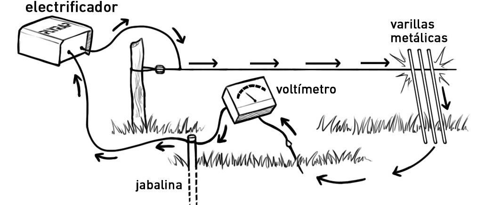

Tierra
Una mala conexión a tierra conduce a la falta de potencia en la
cerca eléctrica y es el problema más común cuando falla un circuito.
Como chequear la conexión a tierra
Paso 1
Compruebe qué hay al menos 3000v en el tendido eléctrico a mas de 100m de distancia del equipo.
Paso 2
Cree un corto circuito en el mismo sitio que midió el punto anterior apoyando postes de hierro
contra el tendido hasta q el voltaje sea inferior a los 1000v.

Paso 3
Acérquese hasta la tierra del equipo y mida el voltaje ahí. Si el voltaje supera los 300v
es necesario agregar estacas al sistema de tierra puesto que esta es insuficiente.